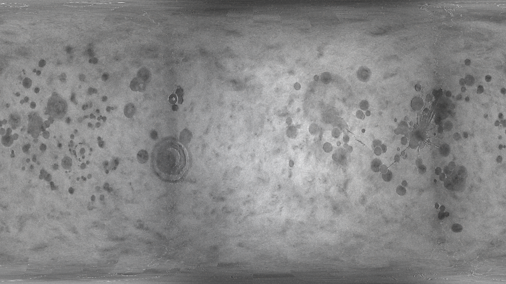
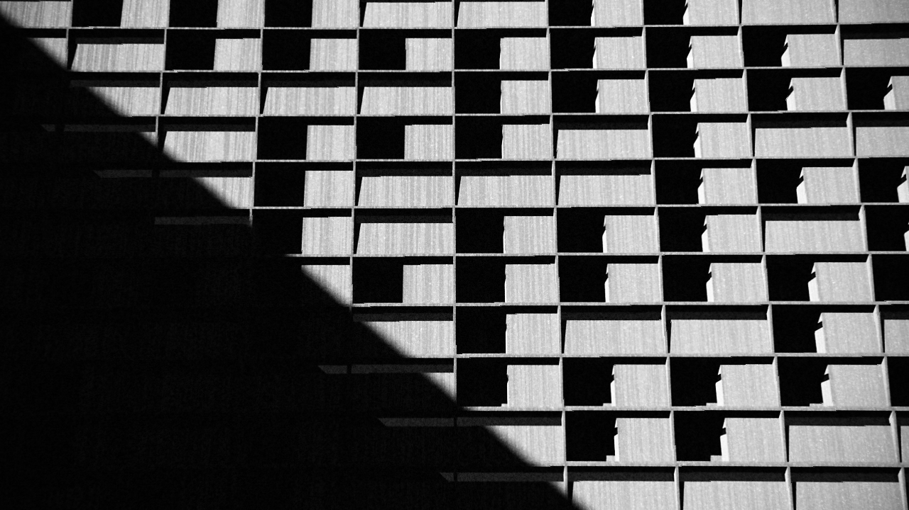
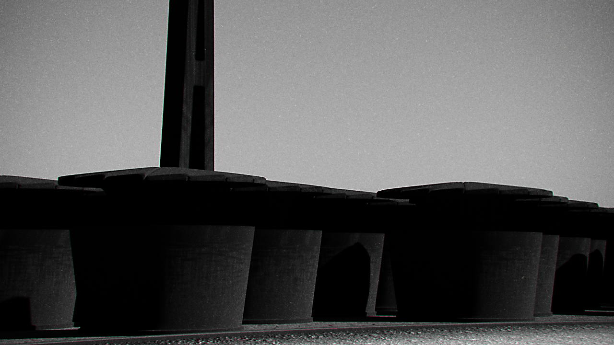
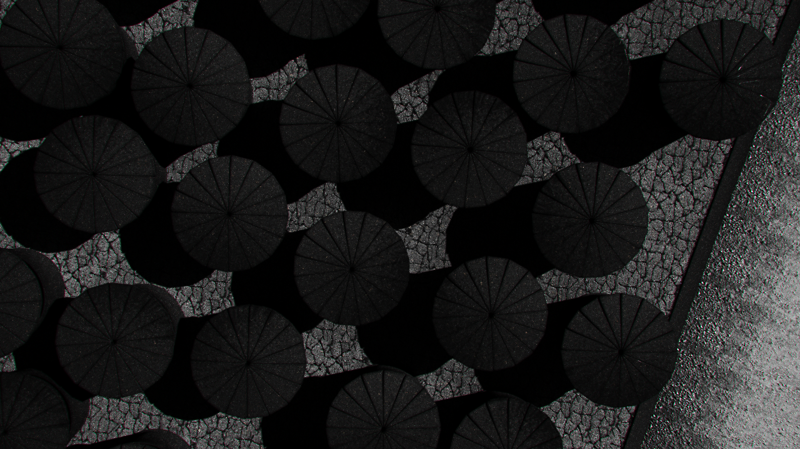
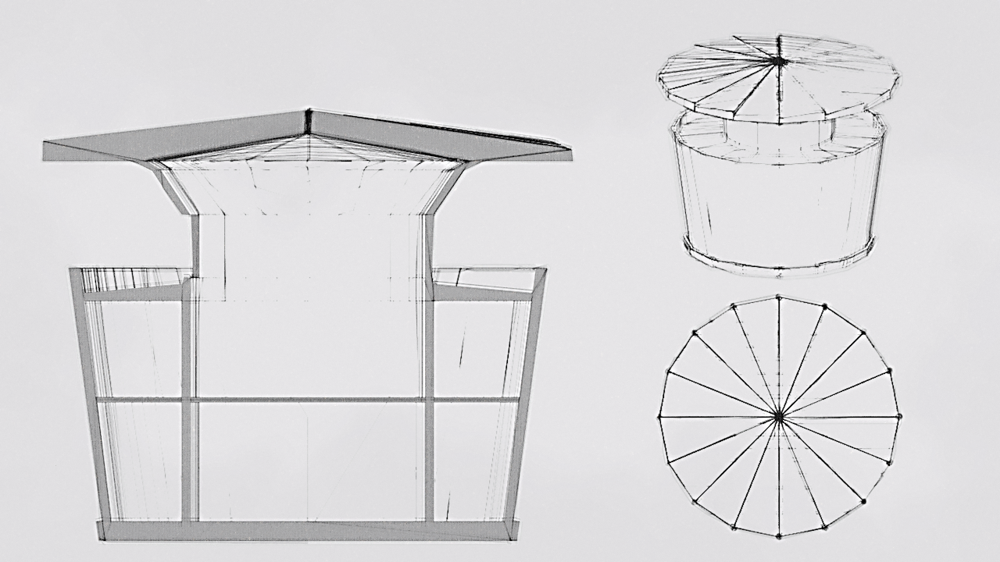

大陸面を正面にした惑星全体図
大陸面を正面にした惑星全体図超大陸の分裂が最近なため、この面に大陸が集中している。この裏側は大洋が広がる。
 惑星と衛星
惑星と衛星主星の1/4.5の大きさ（直径）で比較的大きい。写真は望遠レンズで撮影したため圧縮効果によりさらに大きさの差がなくなって見える。
{kind=link}
{kind=link}
 月の満ち欠け
月の満ち欠け公転周期がほぼ一致しているため、常に同じ面を向け続ける。
月の満ち欠け（アニメーション）
公転軌道が比較的歪んでいて秤動が強く現れる。
公転軌道が比較的歪んでいて秤動が強く現れる。
 最遠・最近の大きさの差
最遠・最近の大きさの差楕円の公転軌道を持つため夏と冬で大きさに差がある。

円筒図法で変形した月面
夜間部分は明度を上げる加工をしている。
{kind=link}
夜間部分は明度を上げる加工をしている。
 円筒図法で変形した世界地図
円筒図法で変形した世界地図雲のない航空写真を組み合わせた地図。
一日の日照アニメーション
秋ごろの360度円筒図法で見る日照の動き。
夜間部分は明度を上げた上で陸部分を乗算合成してある。
秋ごろの360度円筒図法で見る日照の動き。
夜間部分は明度を上げた上で陸部分を乗算合成してある。
{kind=link}

一般的な近郊のタワーマンション
40年代に材料革新によってセメントに類する素材を使ったシンプルな様式が流行した。現在は当時に作られた建築物がレトロ趣味の上で再評価されている。
{kind=link}
40年代に材料革新によってセメントに類する素材を使ったシンプルな様式が流行した。現在は当時に作られた建築物がレトロ趣味の上で再評価されている。

structure4 1245
鳥の巣や巣箱を再構築した近代建築の写真。郊外では都市部の高層化の流れに反して個人向けの建築物が多く構想された。
{kind=link}
鳥の巣や巣箱を再構築した近代建築の写真。郊外では都市部の高層化の流れに反して個人向けの建築物が多く構想された。

structure4 1245
鳥の巣や巣箱を再構築した近代建築の写真。郊外では都市部の高層化の流れに反して個人向けの建築物が多く構想された。
{kind=link}
鳥の巣や巣箱を再構築した近代建築の写真。郊外では都市部の高層化の流れに反して個人向けの建築物が多く構想された。

structure4 1245
structure4のスケッチ。
{kind=link}
structure4のスケッチ。
 南北大橋 1249
南北大橋 1249湾内に入る世界最長の海路の海上輸送路部分の写真。